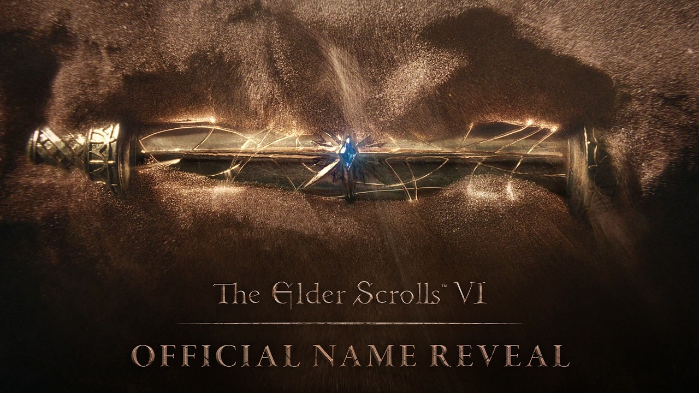
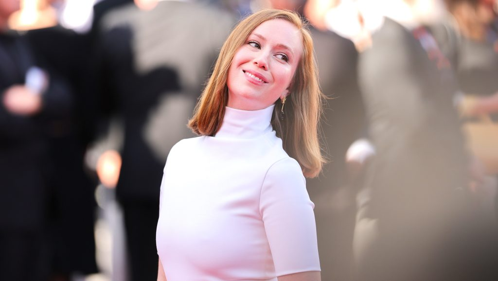
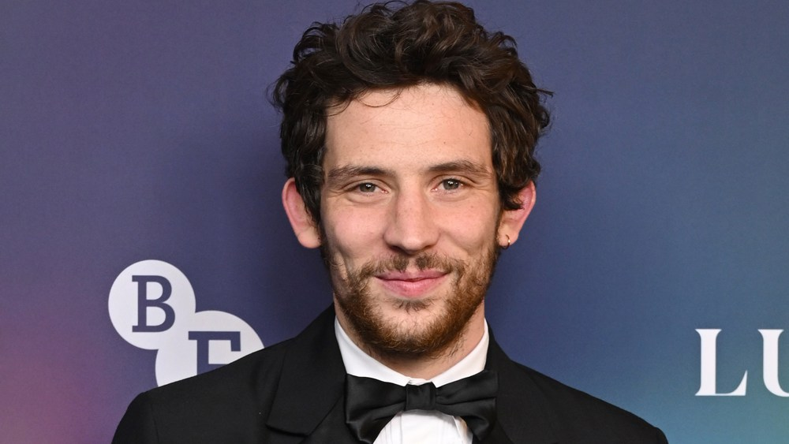

It’s official: The Elder Scrolls VI is called Sentinel

Todd Howard closed a video celebrating 40 years of Bethesda Game Studios by saying, “Everybody’s always asking about Elder Scrolls 6,” and then showed the logo for The Elder Scrolls VI: Sentinel. A short teaser shows a scroll rising out of desert sand, with a quote dated 4E 206, which would put the game about five years after Skyrim. Sentinel is a major kingdom in Hammerfell, so the setting seems clear.
Fans had guessed the name months ago. Xbox CEO Asha Sharma once hid it behind eight asterisks, and former Bethesda writer Michael Kirkbride replied “Yep” to a Reddit theory. Bethesda says “it’ll be some time” before it shares more, and Bloomberg’s Jason Schreier says the game is still more than two years away. There’s no gameplay, platforms or release date yet.
Hollywood celebrates the midterm sweep, and Hannah Einbinder’s Haley Stevens impression goes viral

On Tuesday night the Hacks star promised her “perfect” Haley Stevens impression if “our guys (gender neutral) win tonight.” Stevens, the Michigan Democrat, had switched at the last minute to endorse Republican Mike Rogers. Once Abdul El-Sayed’s Senate win was called around 2 a.m. ET, making him the first Muslim U.S. Senator, Einbinder posted a clip from a bar: “We’re gonna give ’em a little bit of energy, a little bit of pow, a little bit of stick it to ’em, cos that’s the Michigan way.”
Her clip led a long night of celebrity posts as Democrats won the House and the Senate. Henry Winkler wrote “Dreams do come true,” Bette Midler said she was “overjoyed,” and Jimmy Kimmel said the “blue wave made landfall.” Bruce Springsteen had endorsed El-Sayed the day before.
The Bond race is down to final screen tests, and Josh O’Connor calls it a “bizarre pinch me moment”

O’Connor, star of Challengers and The Crown, told the BBC that being considered to follow Daniel Craig is “an incredibly bizarre pinch me moment” and “extraordinary.” He is reportedly in final screen tests in London with Slow Horses’ Jack Lowden and Masters of the Air’ Callum Turner.
Pierce Brosnan also weighed in. He told Vanity Fair that Turner, his former co-star, is “so strong” and that he’s “eager to see” who gets the part. Denis Villeneuve directs the 26th Bond film from a Steven Knight script, the first under Amazon MGM’s control. There’s no trailer or title yet, so the links below go to the news coverage.
Bottom of the news
- Jason Statham and Guy Ritchie reunite for a seventh film, the Netflix revenge thriller Dogfight, shooting in the UK in early 2027.
- Trans rights protesters chanting about J.K. Rowling disrupted the opening of the new Harry Potter flagship store on London’s Oxford Street.
- Quentin Tarantino said he felt he was “letting down” Brad Pitt by not directing The Further Mis-Adventures of Cliff Booth; Trent Reznor and Atticus Ross will score David Fincher’s film.
- Ella Langley’s “Choosin’ Texas” extended its record to 26 weeks at No. 1 on the Hot 100, and Jennie and Tame Impala’s “Dracula” climbed back to No. 5.
- Lionsgate and Meta will release The Hunger Games: Sunrise on the Reaping in 3D on November 20, and Lionsgate and Sony are teaming up on a live-action Naruto.
- Disney is preparing another round of layoffs across several divisions, Deadline reports.
- Ramayana: Part 1, starring Ranbir Kapoor and Yash, premiered in Mumbai ahead of its worldwide release Thursday.